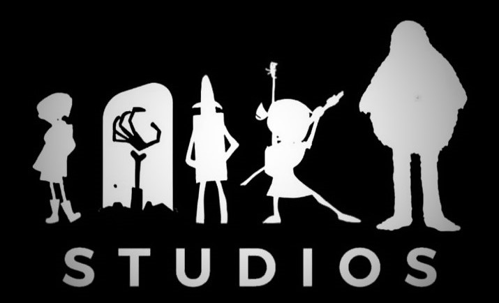

ANIMACIÓN 3D
¿Cuál es la historia de la animación 3D?
Para comenzar, ¿sabías que la historia de la animación 3D está estrechamente vinculada a la historia de la animación por computadora? Así es, todo comenzó en la década de 1960 con los inicios de la animación por computadora y los gráficos. Esta década fue un punto de inflexión para la industria informática en general, ya que las computadoras se alejaron lentamente de su función inicial como calculadoras y se convirtieron en herramientas utilizadas en campos más creativos, uno de ellos fue la animación 3D. Años más tarde, en 1972, en la Universidad de Utah, la historia de la animación 3D va tomando forma de la mano de unos jóvenes llamados Edwin Catmull y Fred Parke, quienes crearon la primera animación en 3D por computadora. El formato fue Super 8, en blanco y negro y sin audio. Increíble, ¿no? Podría decirse que ellos fueron los pioneros de la animación 3D. Si bien no hay narrativa en el cortometraje, este fue hecho a base de mucho esfuerzo por parte de sus creadores. Por ejemplo, la mano animada que aparece en él es de su inventor: Edwin Catmull, quien realizó todo el proceso en una computadora menos potente en comparación a las que conocemos hoy en día. Para ese punto, la historia de la animación 3D se desarrolla aún más, pues se implementaron por primera vez algunas de las técnicas de animación 3D que conocemos actualmente para obtener un resultado bien elaborado. Adicionalmente, en este mismo escenario, los pioneros en la historia de la animación 3D comienzan a darle vida a muchas ideas con las que los animadores soñaban, como la representación 3D de superficies en la pantalla con la ayuda de algoritmos.

Nacimiento de los primeros estudios de animación
Esta década también vio la creación de los primeros estudios de animación 3D como Digital Effects y Lucasfilm. En la actualidad, este último es una de las compañías de animación más reconocidas en el mundo. Siguiendo esa línea, una empresa que también se considera pionera en la industria de la animación 3D es Mathematical Applications Group Inc., la cual creó un software capaz de producir animación digital llamado Synthavision; un algoritmo que simula la reflexión y refracción de un objeto. Este sistema usaba tres formas básicas: esfera, cubo y cilindro, para crear objetos en 3D. Un ejemplo de película animada en 3D que fue creada con este sistema es Tron, la cual salió en 1982 y nos sorprende con el nivel de detalle que proyecta. Si estás interesado en ver cómo se va gestando la historia de la animación 3D, sin duda, ¡te la recomendamos! Continuando con la línea de tiempo de la evolución de la animación 3D, en 1984, como reyes en tecnología, Japón no se quedó atrás. Durante esta época, la compañía Japan Computer Graphics Lab trabajó, principalmente, en la parte de animación 3D publicitaria, es decir, desarrollando anuncios para TV. Además, contribuyeron con los efectos para el anime Lensman.

¿Cuál fue la primera película animada en 3D?
Por lo tanto, ¿cuál es la primera película en 3D? Según The Animation Guys, la primera película animada en 3D con plastilina fue la película de trucos de Edison Manufacturing titulada “The Sculptor's Welsh Rarebit Dream” lanzada en 1908. Como puedes ver, ¡muchos años antes que Toy Story! Años más tarde, aparecieron otras animaciones con plastilina, como “Gumby”, “Shawn the Sheep” y “Wallace and Gromit”; estas fueron creadas por la compañía cinematográfica Aardman y ganaron popularidad rápidamente, dándole forma a los inicios de la animación 3D. A medida que las computadoras se adoptaron ampliamente en los años sesenta, la animación 3D comenzó a despegar. Debido a ello, ahora puedes encontrar incontables películas animadas en 3D en las principales plataformas de streaming.

¿Para qué sirve la Animación 3D?
¿Qué es la animación 3D? La definición de animación 3D viene a ser un proceso informatizado utilizado por los animadores para dar la sensación de movimiento a través de la creación de secuencias de imágenes 3D fijas. No te has enterado de nada ¿verdad? Volvamos al principio. La Animación tiene su origen en el latín «Anima» y cuyo significado es «Alma». Por lo tanto animar significa dar alma a un personaje o un objeto de forma que parezca que este cobre vida, piense y actúe por sí mismo. Sin embargo, técnicamente la animación 3D se realiza mediante programas o aplicaciones que simulan la visualización tridimensional. Todo ello a través de cálculos basados en la proyección de geometría y espacios tridimensionales sobre pantallas bidimensionales. Estas aplicaciones permiten la creación y manipulación de mallas poligonales que luego son convertidas en los fotogramas que componen cualquier secuencia en las películas de animación 3D.
Objetivo de la Animación 3D
El objetivo de los animadores 3D es mover los objetos y personajes de una escena determinada de la forma más realista posible. Puede crear el personaje de dibujos animados perfecto, pero si sus movimientos son torpes, desiguales o robóticos, todo su trabajo se irá por el desagüe. Por eso, los animadores dedican bastante tiempo a estudiar los principios básicos del movimiento para que sus animaciones sean creíbles.

Técnicas y tipos de Animación 3D
Existen incontables estilos de animación, tantos como artistas 3D en el mundo. Dado que el arte es, en definitiva, interpretación, cada estudio y cada animador puede marcar una serie de reglas y elegir las técnicas más apropiadas para definir un tipo de animación. Esta decisión puede tener su origen por motivos artísticos o presupuestarios. Sin embargo, a grandes rasgos, existen 3 principales tipos de Animación 3D: Realista, Cartoon y Snappy y lo más habitual es encontrar híbridos que definen la personalidad o el estilo de cada estudio o en cada película. Aquí te las explicamos todas, en español y con ejemplos. Recuerda, si te gusta este artículo y quieres aprender más sobre la Animación 3D, desarrollarte de forma profesional o simplemente estar al día, en nuestro blog encontrarás una interminable recopilación de Artículos, Noticias, Recursos, Tutoriales, Becas y por supuesto ofertas de empleo.